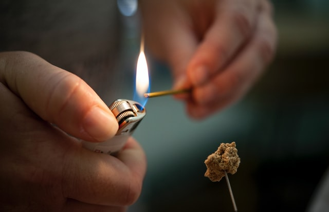

Il TuiNa (in cinese 推拿 tūiná, da 推 tūi, “spingere” e 拿 ná, “afferrare”) è la tecnica di massaggio alla base della Medicina Tradizionale Cinese. Consiste in una serie di tecniche manuali volte ad ottenere determinati risultati per il benessere della persona. Nel linguaggio della Medicina Cinese, serve a ripristinare la corretta circolazione del Qi, l'energia vitale che scorre nel corpo umano attraverso i Meridiani energetici.
Negli ultimi anni, il TuiNa, ha conosciuto una popolarità crescente grazie alla sua efficacia e alla sua completezza. Esso, infatti, prevede un ventaglio molto ampio di manovre da effettuare in determinati punti e zone del corpo, con diverse varianti esecutive. Si utilizzano dita, mani, ma anche gli avambracci e i gomiti. Esistono altre tecniche complementari per il raggiungimento del risultato, la Coppettazione, la Moxibustione e il Gua Sha.
Curiosità: Il TuiNa è stato riconosciuto dall'OMS nel 1998 ed ha un effetto immediato su cervicalgie, dorsalgie, lombalgie, lombosciatalgie, epicondilite, tunnel carpale, ecc., in quanto la persona sottoposta al trattamento si sentirà subito “sbloccata” nel movimento e il dolore attutito.

Moxibustione
Moxa, letteralmente “l'erba che brucia” è l'alleato segreto di ogni operatore TuiNa.
Il calore sprigionato dalla brace di un sigaro di Artemisia dona sollievo immediato a muscoli e articolazioni.
Le sostanze naturalmente possedute da quest'erba penetrano attraverso la pelle, dando giovamento in caso di diverse problematiche, quali ansia, insonnia, sintomi da raffreddamento, ecc.
Studio Olistico TuiNa di Luca Santoianni, Via di Donota,1 - Trieste, Partita IVA 01340520327
Professionista ai sensi della Legge n. 4/2013, iscritto all'Associazione Professionale OTTO
Sito web creato da Francesco Santoianni, 2022